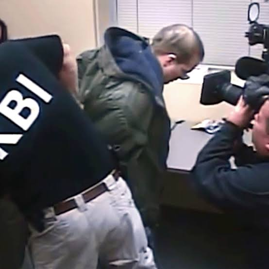
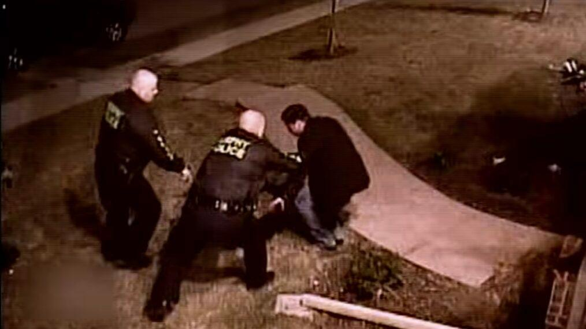

1980s
Before the spotlight
Hansen begins his career in broadcast journalism, working in local news and developing the reporting skills that would later define his national work.
↗
WARNING: CONTENTS MAY DISTURB THE SIGNAL
Chris Hansen is an American television journalist known for investigative reporting, particularly his work confronting adults who used the internet to pursue minors.
His career began long before the viral clips, reaction videos, and internet memes. He worked in local news before joining NBC News in 1993, building a reputation for undercover and investigative journalism.
His defining project brought hidden-camera investigations into American living rooms — raising questions about public safety, media ethics, and what happens when journalism becomes entertainment.
SUBJECT IDENTIFIED / VERIFIED HISTORYHansen begins his career in broadcast journalism, working in local news and developing the reporting skills that would later define his national work.
He joins NBC News, reporting on major stories and pursuing investigations that brought hidden activities into public view.
The hidden-camera series becomes widely known. Suspects arrive expecting to meet someone they encountered online, only to face investigators and cameras.
A planned investigation in Murphy, Texas, ends in tragedy when prosecutor Bill Conradt dies before he can be arrested. The case intensifies scrutiny of the operation and its methods.
The original run concludes. The show's legacy remains debated, including its public-interest reporting, confrontational format, and the consequences of televised investigations.
After leaving NBC, Hansen continues to pursue investigative projects, later returning to predator investigations through online video and independent formats.
To Catch a Predator became one of the most recognizable investigative television formats of the 2000s. Its confrontations spread far beyond the original broadcasts, later finding a second life in internet culture.
But a compelling television moment is not the whole story. The show raised difficult questions about cooperation between journalists and law enforcement, the role of producers, and the responsibility that comes with broadcasting an investigation.

After the original series, Hansen continued developing investigations in new formats. Projects including Hansen vs. Predator and later online reporting carried elements of the original concept into a different media landscape.
The internet changed how audiences encountered his work. Clips circulated independently of their original context, turning serious investigations into memes and catchphrases.
That contrast is part of the story: a subject involving real people, real consequences, and public safety became entertainment consumed in seconds.
To understand Hansen's career, it helps to look beyond the most famous clips and examine the journalism, controversy, and changing media environment around them.
The key to being a good interviewer is to listen, no matter how heinous the act that person [has committed].
- Chris Hansen
Use these sources to explore the subject beyond this visual archive. This page is an overview, not a complete biography.
